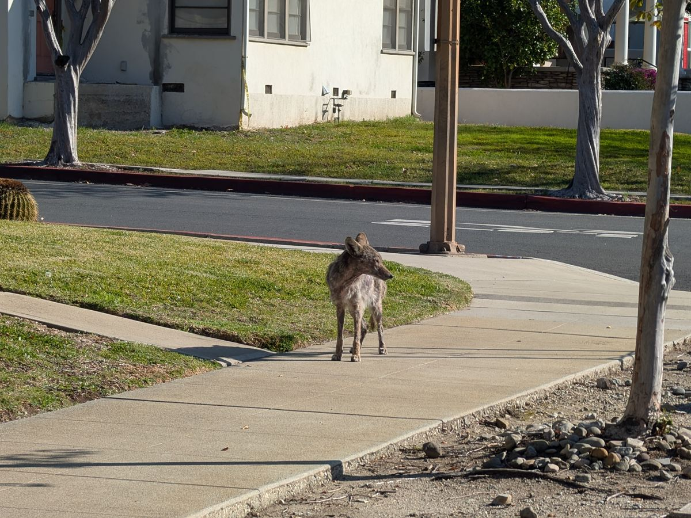

Living on the beautiful, tree-lined edge of the San Gabriel Valley means we share our spaces with more than just our neighbors' pets. Urban coyotes are a permanent fixture of life in the 91711 — they use our leafy greenways, wash systems, and quiet streets to navigate between the foothills and the valley. While seeing a coyote cruise down a sidewalk at dusk is common, the protocol changes significantly if you encounter an animal that appears distressed, sick, or overly bold. To keep our community, pets, and local wildlife safe, here is the local protocol and safety playbook for managing coyote encounters in town.
Phase 1: Hazing — How to React If You Encounter a Coyote
Coyotes are naturally wary of humans, but urban individuals can become habituated if they lose their fear. If you come face-to-face with a coyote on a walk or in your yard, the goal is "hazing" — making yourself look and sound as large and intimidating as possible.
- Stand your ground. Never turn your back and never run. Running triggers a coyote's natural predatory chase instinct.
- Make major noise. Yell loudly in a deep voice, clap your hands, blow a whistle, or sound an air horn if you carry one. If you're carrying a travel mug or keys, shake them aggressively.
- Go big. Wave your arms over your head. If you have a jacket, open it up wide like a sail to exaggerate your size.
- Protect your pets. If you're walking a small dog, pick them up immediately. Keep all pets on a secure, short, non-retractable leash.

Phase 2: Reporting a Sick or Injured Coyote
The City of Claremont relies on resident reporting to track distressed wildlife, but calls must go to the correct agency depending on the situation.
Inland Valley Humane Society & S.P.C.A.
For sick, injured, or distressed wildlife that is not actively attacking a person. Their humane officers track specific sightings and decide whether an animal needs medical rescue or intervention.
Non-emergency: (909) 623-9777 24-hour emergency dispatch: (909) 594-9858Claremont Police Department
For immediate safety threats — if a coyote is actively aggressive, cornering a resident, or trapped inside a secured backyard with people. Bypass animal control and call dispatch.
Emergency: 911 Non-emergency (24-hour): (909) 399-5411City of Claremont Sightings Tracker
For general sightings of a healthy coyote just passing through. The city maintains an online mapping log to track local coyote paths and numbers — logging your sighting helps the city update its wildlife maps. Find the current reporting form on the city's Report Coyote Encounters page.
Phase 3: Securing Your Yard (The Neighborhood Strategy)
Coyotes visit our neighborhoods because they find easy food resources. Securing your property helps protect your pets and pushes wildlife back toward their natural mountain hunting grounds.
Rethink Outdoor Pet Habits
Both the City of Claremont and the Inland Valley Humane Society advise keeping domestic cats entirely indoors and supervising dogs when outside. Urban coyotes are highly active hunters during daylight hours — unsupervised pets in open yards face a safety threat regardless of the time of day.
Lock Down the Trash
Secure your city waste bins with tight-fitting lids. Never leave bags sitting on top of or next to the bins, and only put them out on the morning of collection if possible.
Clear the Fallen Fruit
Coyotes are omnivores and love the fallen citrus and avocados common in Claremont yards. Clean up the ground under your trees daily.
Feed Pets Indoors
Never leave bowls of kibble or water outside on the patio — they act as open invitations for wildlife.
Clear Out Excess Brush
Coyotes use dense overgrowth, woodpiles, and unmaintained yard corners as daytime cover and resting spots. Thinning thick brush, trimming low-hanging hedges, and clearing out the back of side yards removes the hiding places that let coyotes linger in residential neighborhoods rather than passing through.
Official Resources & Regulations
For a deeper dive into the city's wildlife management strategies and detailed safety parameters, review the official city documentation.
City of Claremont Coyote Information Portal
Regional urban wildlife behavior, yard audits, and the city's broader coyote management approach.
Report Coyote Encounters (City Reporting Matrix)
The official city guidelines on how coyote behavior is classified — and the live reporting form for logging sightings.
Sick / injured coyote: Inland Valley Humane Society — (909) 623-9777 day, (909) 594-9858 24-hour.
Aggressive coyote / immediate threat: 911, or Claremont PD non-emergency (909) 399-5411.
Just passing through: log it on the city's sightings page.